Stacks
Stack a project's graded frames on the server and check the result before full processing. This page covers the Stacks view, the stacking method, calibration, the build queue, automatic refresh, signal-to-noise by depth, and color previews.
Open Stacks
Stacks sits beside Images and Sequence in the header. It stacks every frame of the project chosen in the header, or of one target when a target is chosen. Each project row in the Library has a Stacks button too; a project with one target opens at that target.
To stack a hand-picked set, select two or more images in Images and click Stack selected. Stacks opens with that set. Stack every image instead goes back to the whole project.
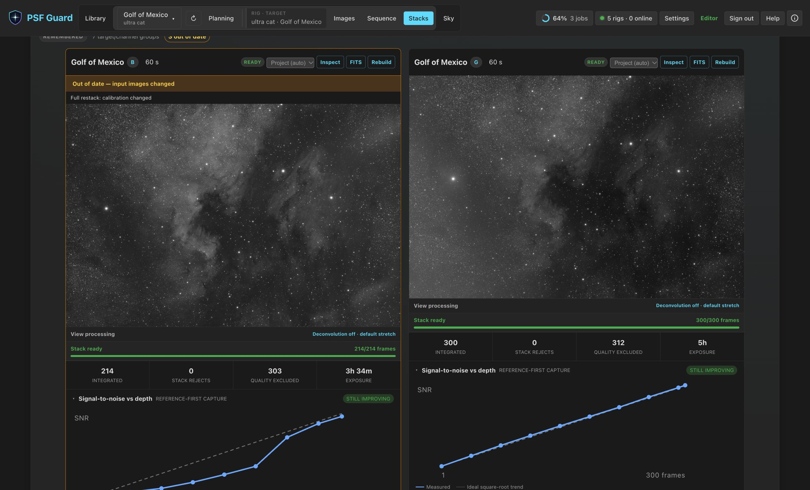
Card size, at the top of the view, sets how wide the stack and color cards are, from 300 to 1600 px. By default the cards fill the row: one to a row, or two on a wide screen. A size you choose stays in this browser and in the page address; Fit goes back to filling the row.
Click the panel's Stacks title to fold the whole panel. A folded panel shows how many channels it holds, or that a build is running.
Build stacks
Click Build stacks. PSF Guard queues one build per target and filter, registers the frames with Seiza, and integrates them. It never mixes targets or filters. A channel already built from the same frames and settings comes back at once. A channel with fewer than two frames is skipped. Build on one card builds that channel alone.
Once the project has stacks, the button reads Build current set, and Rebuild current set builds every channel again even when nothing changed. Each card keeps its channel's last good stack. Rebuilding one channel leaves the others alone, and a failed build never replaces a good one.
What goes in:
- Accepted frames, and Pending frames unless Accepted only is ticked.
- Never Rejected frames. Never frames that sequence analysis recommends for rejection, such as cloud, obstruction, off-target pointing, lost tracking, stars far softer than the target's best, or a rotator that slipped. See Quality Screening.
The server log names each frame a build leaves out or Seiza rejects, and why. The desktop app writes this log to a daily file; Open logs in Settings opens the folder.
Expand Frame decisions on a card to audit the build: each frame's quality score and decision, and for admitted frames the matched stars, registration RMS, drift, overlap and weight. Excluded and rejected frames keep their reason.
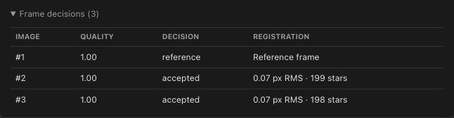
Separate exposure lengths
Separate exposure groups, at the top of Stacks and in Images, is on by default. Frames of 120 s and 300 s build separate stacks instead of dimming each other. Within one target and filter, a new group starts when an exposure is at least twice the shortest in the current group, so 10, 10.1 and 19 s stack together while 30 s and 300 s each start another. Frames with no recorded exposure form Unknown exposure.
Turn it off to mix lengths in one stack. The choice is saved per project in that database, and a project that chose either way keeps its choice. Changing it needs database management. It changes stacking and grid grouping, not grades or Target Scheduler plans.
Choose the stacking method
Settings → Stacking → Stacking method sets how every stack on the server integrates its frames. Three presets fill in the choices below; each choice can also be changed on its own.
- Recommended, the default, is Seiza 0.19's method: local background normalization, frames weighted by their noise, a reference chosen from each frame's stars and sky, quadratic registration for lens distortion, and Lanczos-3 resampling.
- Draft is Recommended without the final rejection pass, for a quick look.
- Classic is what PSF Guard did before the method could be chosen.
| Choice | Recommended | Classic | Also offered |
|---|---|---|---|
| Final pass | Reintegrate | Reintegrate | Draft |
| Normalization | Local background | Global | Local |
| Frame weights | By noise | Equal | |
| Reference frame | Chosen by Seiza | Best graded | |
| Registration | Quadratic | Similarity | Affine |
| Resampling | Lanczos-3 | Bilinear | |
| Bayer drizzle | Off | Off | On |
- Final pass. Reintegrate reads every admitted frame three more times and rejects outliers against all the others, so a satellite trail in the reference or an early frame goes too. Draft publishes the live stack as it stands: much faster, but such a trail can stay.
- Normalization. Local background keeps one gain per frame, measured from star photometry, and matches each 256-pixel tile's background to the reference, so frames with different sky gradients leave no seams at their edges. Global fits one gain and one offset per frame. Local fits a gain per tile, which a tile of cloud or nebula can push far enough to reject the frame.
- Frame weights. By noise lets quieter frames count for
more. A frame's weight is
(reference noise / frame noise)², clamped to 0.05–20, so a frame twice as noisy as the reference weighs 0.25. A weighted card adds a Weight column to Frame decisions; hover a weight to see the noise behind it. - Reference frame. Chosen by Seiza scores each frame by its brightest unsaturated stars against its sky noise, then takes the flattest sky among frames within 70% of the best. Scores are cached, so a rebuild reads only new frames. Best graded uses PSF Guard's quality grade.
- Registration. Quadratic follows a wide field's lens distortion. A frame with too few paired stars keeps the similarity fit.
- Resampling. Lanczos-3 gives sharper stars and clamps ringing at bright edges. Bilinear is faster.
- Bayer drizzle. For color cameras. Each registered pixel takes only the nearest photosite of its own color, so nothing is interpolated. It pays only when frames are dithered by several pixels; with little movement it lowers SNR. A drizzled stack skips the final pass.
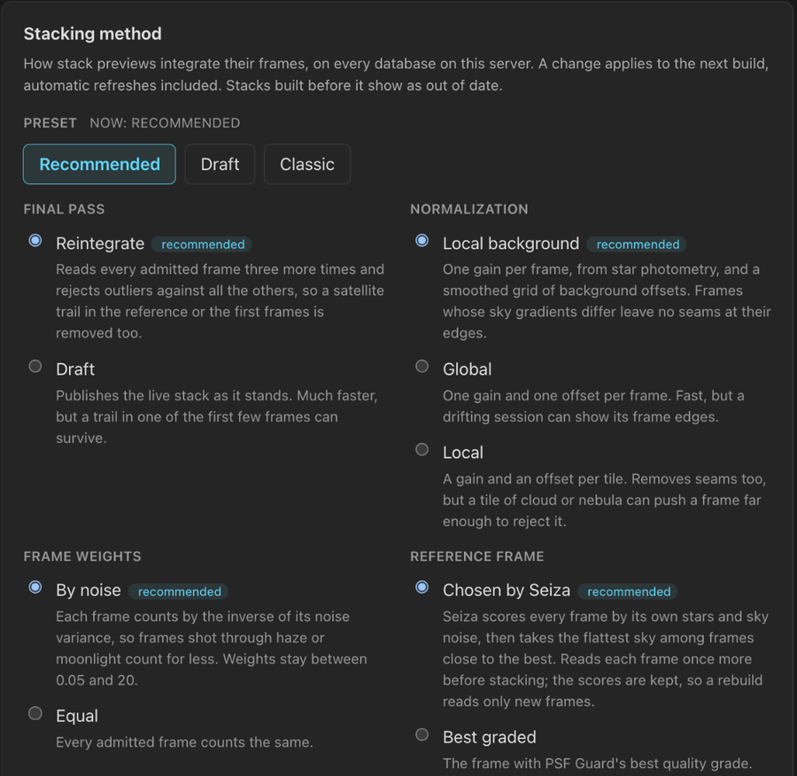
The stack panel names the method in use beside Method:; click it to open Settings. A change applies to the next build, automatic refreshes included. Cards built another way read Out of date — stacking method changed, and cards from before the method could be chosen read Out of date — built before the stacking method could be chosen. Both stay visible until rebuilt.
Seiza 0.23.1 builds calibration masters on every core and runs stacking, debayering, display stretches, background models and deconvolution faster, with the same output. After each Seiza stacking upgrade, existing stacks and masters rebuild once.
On the command line, psf-guard stack-snr --weight-by-noise
applies the same noise weights; see below.
Calibrate each channel
Stacks match each light against the catalog's calibration library and build bias, dark, dark-flat and flat masters as needed. The panel's Calibration control picks how the next build calibrates:
| Mode | What it does |
|---|---|
| Auto | Default. Applies the safe masters. Holds back a flat that has no bias or dark master unless the pedestal can be fitted from the lights. |
| Force on | Applies every master that can be built, including those Auto holds back. The card warns what to expect. |
| Off | Stacks the raw frames. |
The project-wide choice is saved. Each card has its own select that overrides it for that channel; Project follows the panel. A stack built under another mode shows as out of date.
A multi-night stack whose lights need different flats or darks splits into calibration sessions, and the build swaps masters between them. A master that fails to build does not fail the stack: the card names the skipped master and why, and the build goes on with the rest.
While masters build, the card and the header queue name the master, what Seiza is doing with it, and the frame or tile under way, for example Master dark · integrating frame 4/20. The bar moves with it. Stop ends a master build part way, and a master stopped part way writes nothing.
Masters on a finished stack opens the bias, dark, dark-flat and flat files that stack used, with the sessions and channels that used each, fitted pedestals, pan and zoom, a display stretch, and an unchanged FITS download. Matching rules, flats-only pedestals and master caching are on Calibration Libraries.
Queue builds
Build buttons stay live while a build runs. Each click queues another
build behind it. One stack build runs at a time on the server, across every
database, so memory use does not grow with the queue. Cards show
queued or live progress.
Stop appears while a build is queued or running, and reads Stop all with a count when more than one is waiting. A stop lands between frames, channels, or the frames of a master. Nothing partial is published: a channel stopped before its FITS is written leaves no stack, and channels already finished keep theirs.
A build belongs to the server, not to the page that started it. Leave the
page or reload it and the cards pick up the running build. The header's
background jobs chip shows overall progress and the number of jobs; hover or
click it to see the queue. There ↑ and ↓
move a waiting build, × takes it out, and
Stop ends the running one after asking once. Click a build
to open its target's stacks. Progress keeps moving through the final
rejection pass, for example Rejecting transients · pass 2/3 · frame
4/14.

The queue survives a restart: queued and running builds come back in order. See Storage & Performance for the job journal and the share of processor cores each kind of work gets.
Add frames without restacking
A finished or stopped build saves a checkpoint. A later build of the same
channel whose frames only grew reopens it and registers just the new
frames; the frame counter marks the restored ones resumed. The
result is the same as a build from scratch.
The checkpoint is reused only when every earlier frame is still there,
unchanged, and the calibration, Accepted-only policy, scoring, stacking
method, frame order and pipeline version all match. Otherwise the card says
why, for example Full restack: the scoring policy changed, and
the old checkpoint is deleted as the restack starts. A checkpoint no build
has written or resumed from for 30 days is deleted; the stack it led to
stays. See Disk use.
Keep stacks current on their own
Turn on Rebuild stack previews on their own under Settings → Stacking → Stack previews. It is off by default and covers every database on the server. A project whose stacks were built once then restacks the channels whose frames or grades changed, one build per channel, with the same settings. Other channels are left alone.
| Setting | Default | Effect |
|---|---|---|
| Wait after new frames (minutes) | 5 | New frames from an import, upload, sync or quality scan settle this long. Each arrival pushes the refresh out again, up to four delays. |
| Wait after grade changes (minutes) | 15 | Grading waits longer, since it is interactive. Each change pushes the refresh out again, up to four delays. |
| Also stack channels that have no stack yet | Off | Stacks a channel with two or more usable frames before anyone opens the project. |
| A new channel needs a frame from the last (days) | 7 | Leaves older channels alone, so turning the option on does not stack a whole catalog. |
| Also stack old channels, of any age | Off | Drops the day limit. On a large catalog this keeps the stacker busy for a long time. |
Automatic builds use the background share of the processor and step aside
when you start a build, a color composition, a stretch or an artifact
search. A refresh that is still waiting stays out of the header's queue; it
appears when it starts building, marked automatic. A refresh
never changes grades, files or the calibration library.
Measure signal-to-noise by depth
Each build measures how its signal-to-noise ratio grows with depth, at 1, 2, 4, 8 frames and so on, plus the full set. The solid line is the measurement. When every frame has the same known exposure, a dashed line shows ideal averaging, where noise falls as the square root of the frame count. With mixed or missing exposure lengths, the card shows only the measured curve.
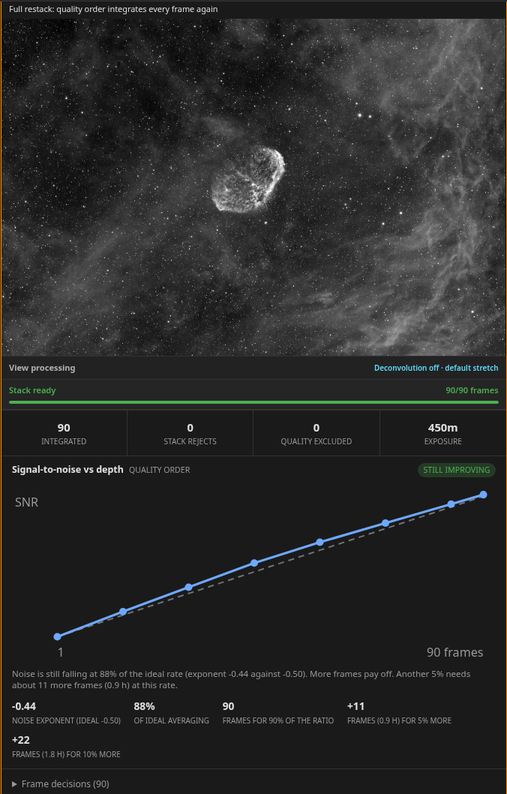
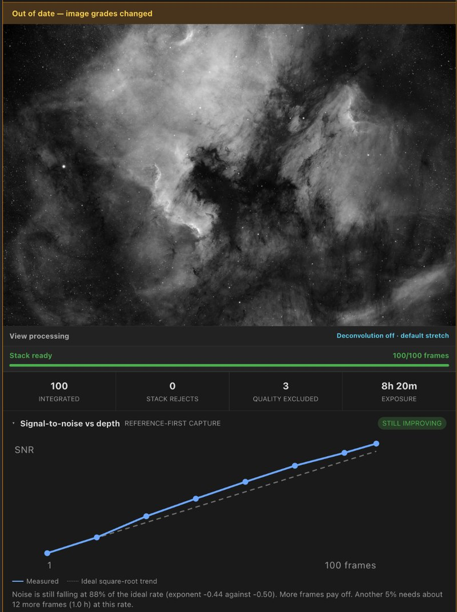
The Order control sets which question the curve answers:
- Capture sequence, the default, starts from the registration reference and adds the other frames in capture order. Use it to judge whether more nights of the same data will help.
- Quality adds the best-graded frames first. The depth where the curve leaves the ideal is where weaker frames stop paying for themselves. A quality build always restacks every frame and never resumes.
With enough measurements, the card gives one verdict:
| Verdict | Meaning |
|---|---|
| Still improving | Noise falls at three quarters of the ideal rate or better. More frames pay. |
| Diminishing returns | Noise still falls, but each frame buys well under what it should. |
| Plateau | Noise has all but stopped falling. More frames like these will not help. |
| Getting worse | Noise rose over the deeper part of the run. |
| Inconclusive | The deeper points do not settle on one trend, so there is no projection. |
For equal exposures the card also estimates how many more frames a further 5% or 10% would take. A plateau usually means a floor the frames cannot get under, such as a gradient, fixed-pattern noise from an undithered run, or walking noise: change the acquisition rather than shoot more of the same.
Click Signal-to-noise vs depth to fold the chart on every
card. The heading keeps the order and verdict. The curve is also saved beside
the stack, in the resume checkpoint, and in the FITS as
SNRORDER, SNRNOISE, SNRVALUE,
SNRSLOPE and SNRVERDT.
psf-guard stack-snr runs the
same measurement over a folder, without a catalog or calibration:
psf-guard stack-snr /path/to/lights
psf-guard stack-snr /path/to/lights --order quality --csv curve.csv --json curve.json
psf-guard stack-snr /path/to/lights --weight-by-noiseInspect and download a stack
Inspect opens the full-resolution stack in the image inspector: scroll to zoom, drag to pan, F or 0 to fit, 1 for one image pixel per screen pixel. FITS downloads the linear, unstretched 32-bit float integration with its WCS and Seiza's frame counters, ready for other processing software.
View processing on a card sets a display stretch and optional deconvolution. Apply processing renders new previews from the cached FITS; Revert processing returns to the original. The stack itself is never rewritten.
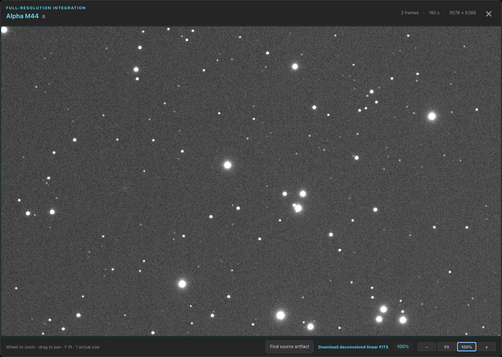
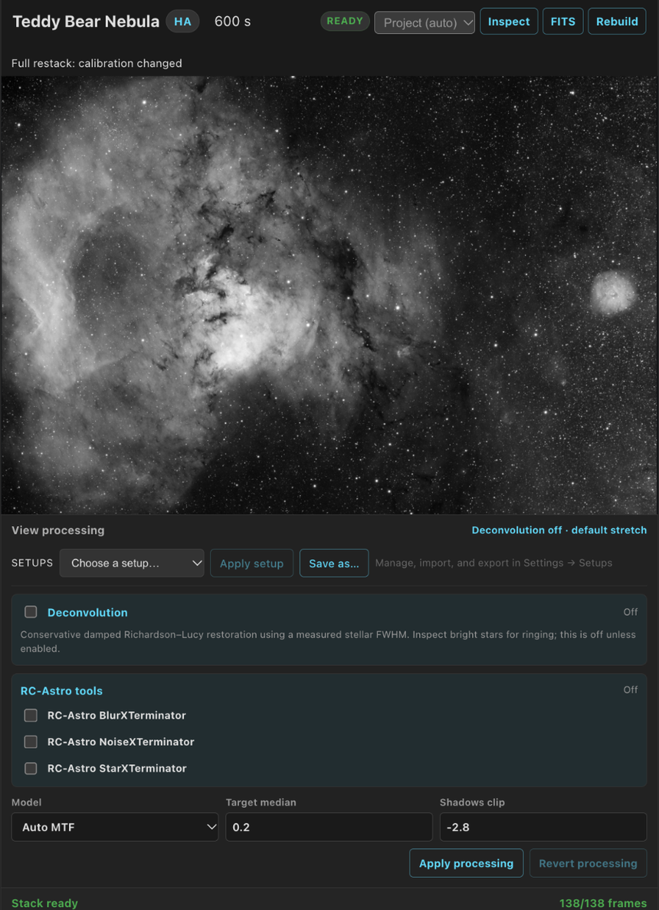
Keep channels the same way up
A German equatorial mount turns the field 180° at a meridian flip. Registration lands both halves on one grid, but the reference frame sets which way up the stack comes out, and two channels can disagree. PSF Guard turns a finished stack by a half turn when its reference faces the wrong way. The turn reverses the pixel order: no resampling, and the camera angle is kept.
It decides by the strongest evidence it has:
- A cached plate solve or a valid WCS on the reference frame: north goes in the upper half. No new plate solve is run.
- The reference frame's
PIERSIDEheader, read against any channel in the build that was solved. - The side most of that stack's exposure time faced.
The first two give every channel of a target the same answer. The third
only knows one stack, so solve one frame per channel or record
PIERSIDE to tie channels together. A night that never flipped
is never turned.
Compose color
Once a target has mono stacks for L, R, G and B, or for H-alpha and OIII, Stacks adds Combine channel stacks. Color is its own job: changing a palette never restacks the channels.
- RGB needs R, G and B; LRGB adds L.
- Narrowband needs H-alpha and OIII for HOO and Foraxx HOO. SII adds SHO, SOH, HSO, HOS, OSH, OHS and Foraxx SHO.
Color follows its channels. Once a build leaves none of a target's channels waiting, PSF Guard composes the target's color previews again from the newest stacks, with the same palette, crop and processing; a preview whose channels did not change is left alone. A target with no color preview yet gets its first after a build started from Stacks: LRGB when it has L, R, G and B, else RGB, else the first narrowband palette its channels allow. Automatic refreshes compose only what was composed before.
With exposure groups on, each card matches channels of one exposure band, so 30 s and 300 s RGB give two cards. A band missing a channel names what it lacks. Custom combination, below the target's cards, picks sources by hand: mixed exposures, ambiguous filter names, or WBPP channels.
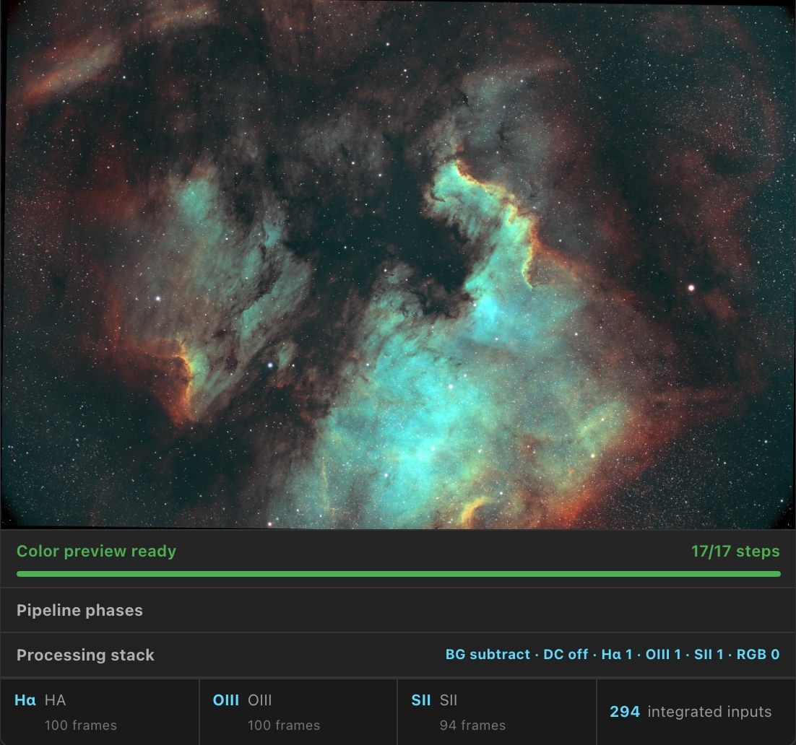
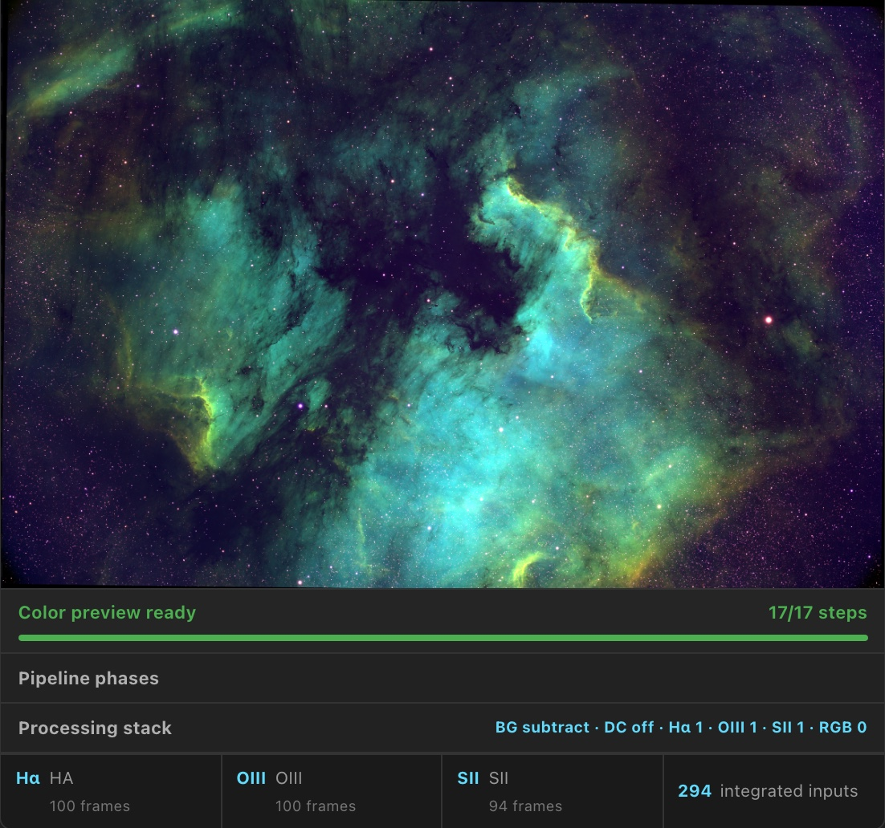
Rebuilding a channel marks its color previews Out of date but leaves them visible. FITS on a color card downloads the RGB result as 32-bit float, with the palette recorded in its header.
Trim registration edges
Registering one channel onto another leaves blank edges where it did not reach. Each color card's Edges picker chooses what to keep:
| Choice | Keeps |
|---|---|
| Keep blank edges | Default. The whole reference grid. |
| Trim to covered box | The box the covered pixels span. Enough for dithered channels. |
| Trim to full coverage | The largest rectangle every channel covers. Removes the corners a meridian flip or rotator leaves. |
The crop happens before normalization, so every channel scales from the
same sky, and the FITS moves CRPIX to keep the plate solution.
The card reports the kept size and share. When one channel's coverage looks
like a pointing error rather than dither, the card names it.
Remove the background
Before registration, PSF Guard fits and subtracts each channel's background with Seiza. The automatic model compares constant, linear and quadratic surfaces and takes the simplest that clearly improves the fit. All channels of one preview get the same surface shape, which keeps the corners from turning green on one side and magenta on the other. When a channel has a fresh plate solve, large cataloged nebulae are kept out of the samples.
The Processing stack editor sets subtraction or division, strength, sampling, and an ordered list of stretch stages per input and for the RGB output. Apply processing stack builds a new preview; Revert edits and Reset defaults go back.
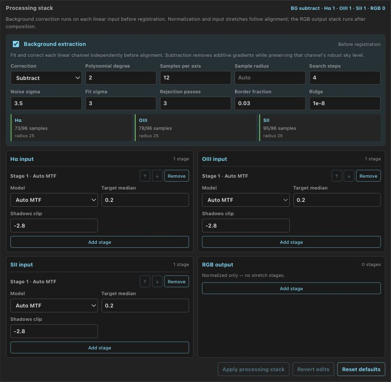
Deconvolution and RC-Astro tools
Seiza deconvolution is off by default. Turn it on in View processing or per color input, and give the measured star FWHM in pixels. It is a view setting: the stack stays linear and unchanged, and the inspector offers the deconvolved FITS while it is on.
When the server has RC-Astro's rc-astro CLI installed and
licensed, RC-Astro tools offers BlurXTerminator,
NoiseXTerminator and StarXTerminator on the linear data, before the stretch.
Star removal keeps both halves, with a Starless /
Stars switch and a stars FITS. Set
PSF_GUARD_RC_ASTRO when the CLI is not on the server's
PATH.
Save processing setups
Setups at the top of View processing and the color Processing stack saves the current parameters under a name. Choosing a setup fills the editor; nothing renders until you apply it. A view setup holds the stretch, deconvolution and RC-Astro steps. A color setup holds background extraction, per-channel processing and output stretches, and matches channels by name on another target.
Setups serve every database on the server. Settings → Setups lists, deletes, imports and exports them. On a server with accounts, viewers can list, apply and export; saving, deleting and importing need an editor.
Find which frame made a defect
A stack can make a trail, reflection, dust shadow or hot pixel easier to see than any single frame does. In the inspector, click Find source artifact, drag a box around the defect, and click Search this region. PSF Guard maps the box back through registration into every source frame and ranks the crops by how far each sits from its peers.
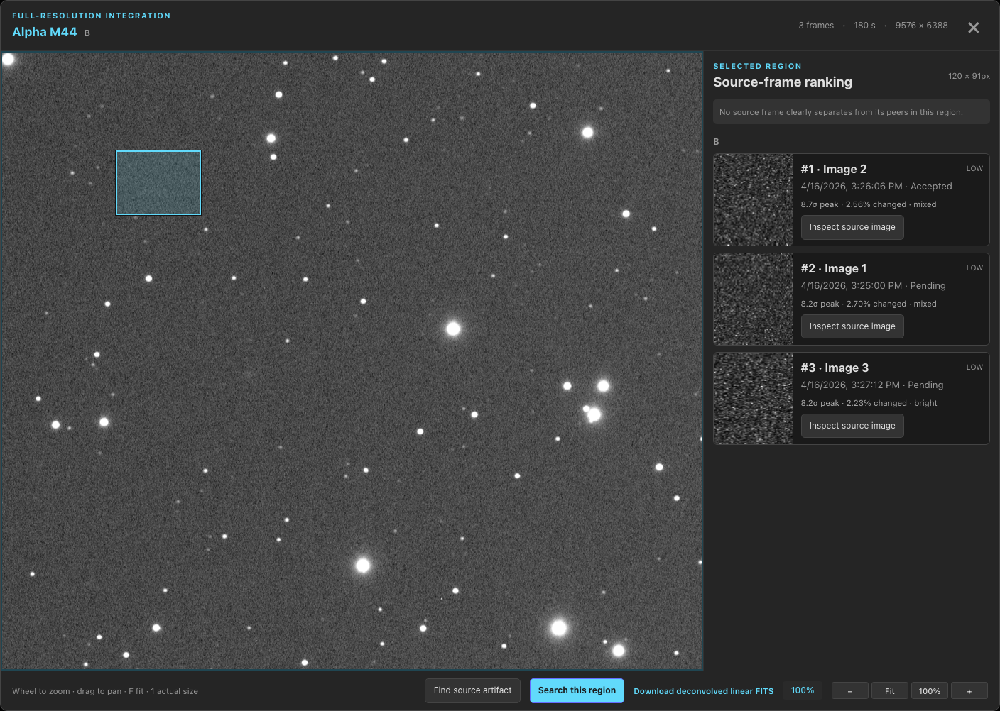
Each result gives its peak sigma, whether it is brighter or darker, and a shape: compact spot, trail, ring, or broad shadow. Weak results stay unlabeled. The search never changes a grade. It cannot find a defect that sits in the same registered place on every frame, since that becomes the baseline. The box must be at least 8 pixels a side and stops at 512.
Mosaic panels
When a project's targets are one mosaic, the header's target switcher offers the mosaic as one choice, such as M31 mosaic (4 panels). In Stacks it lays each panel's latest stack out as the mosaic's grid, and beside it places every solved stack on the sky by its plate solve, north up. Nothing is stitched: each panel still stacks, grades and calibrates on its own. The caption names panels with no stack or no solve yet.

Export for other stackers
Once the stacks look right, export the accepted lights and their matched calibration frames, or run PixInsight's WBPP on the server. See Export & AstroBin and WBPP Runs.